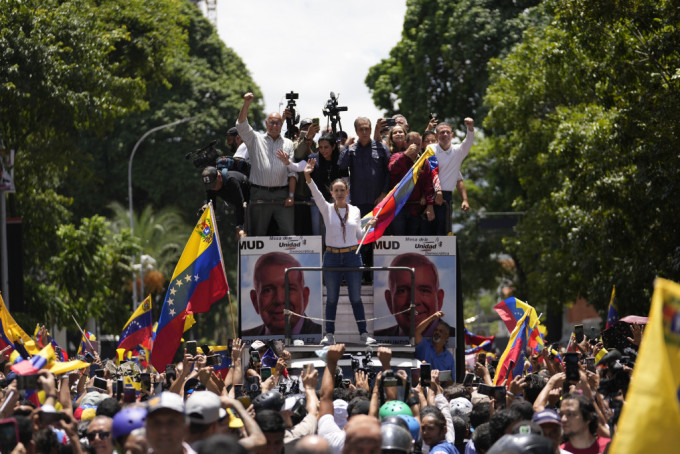
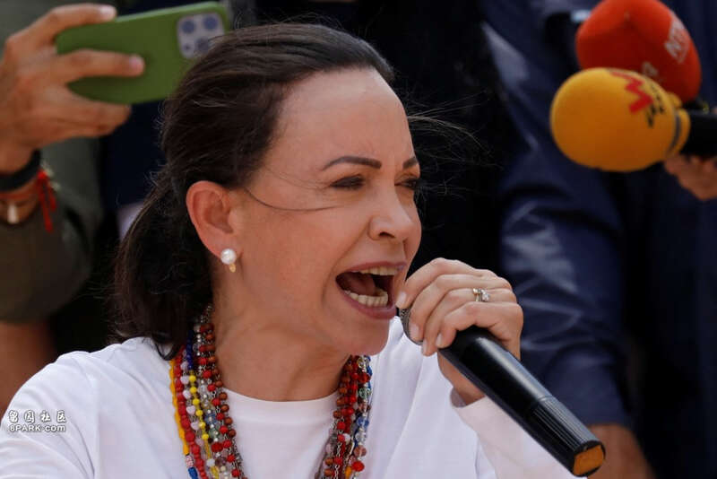
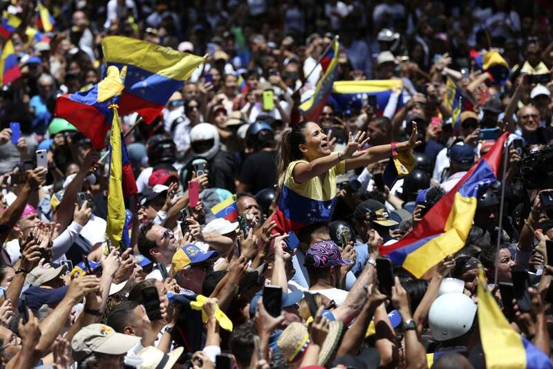
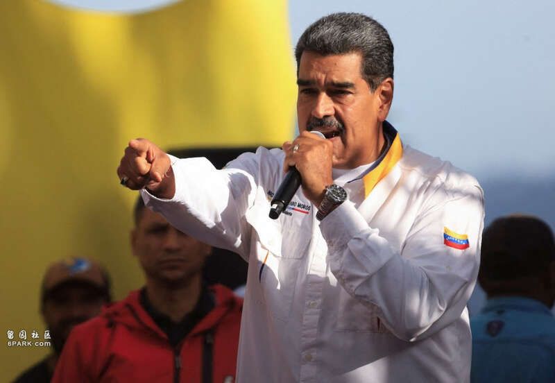
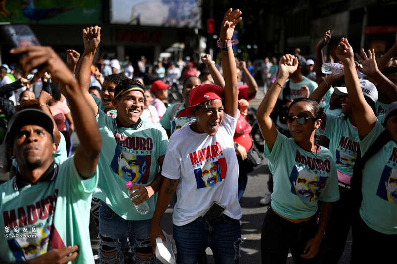
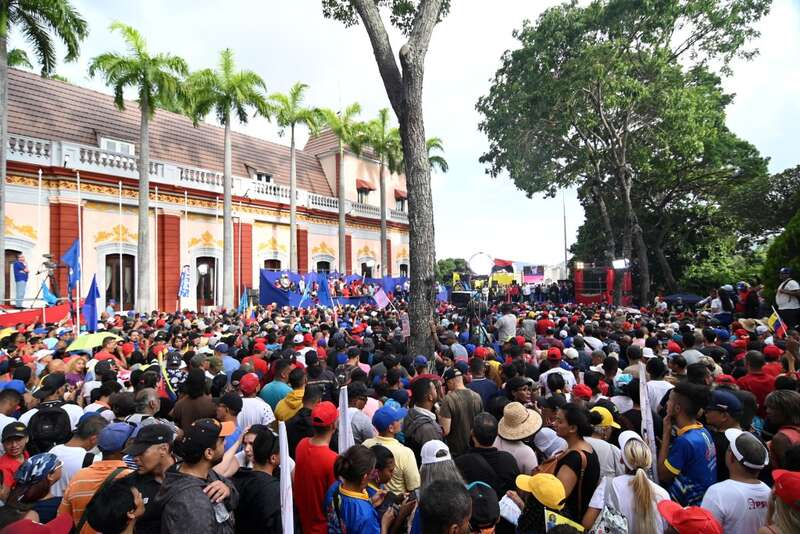

委内瑞拉反对派领袖马查多因人身安全躲藏数天后现身，号召支持者向当局施压，寻求推翻选举结果。美联社
南美洲国家委内瑞拉总统马杜罗宣布在大选中胜选连任的争议性结果，持续引发涉嫌舞弊的风波，周六有不同阵营的数千民众走上街头抗议。反对派领袖马查多因人身安全躲藏数天后现身，号召支持者向当局施压，寻求推翻选举结果，结束马杜罗的管治。马杜罗指，约有2000人在连日来的抗议活动中被捕。而7个欧盟国家的领袖则呼吁委内瑞拉公布总统大选投票纪录，以显示选举过程透明与诚信。
委内瑞拉7月28日举行总统大选，选举委员会其后宣布马杜罗以51%得票率当选，反对派候选人冈萨雷斯得票率则为46%。选委会对外公布大选结果后，除引发各界有关舞弊的质疑声浪，更掀起新一波波抗议行动。保安部队随后出面镇压，马杜罗政府直指抗议行动是有美国作为后盾的政变未遂行动。

反对派领袖马查多号召结束马杜罗的管治。路透社

反对派支持者上街，抗议大选结果。美联社

马杜罗指，约有2000人在连日来的抗议活动中被捕。路透社

马杜罗支持者参加亲政府集会。路透社

亲政府集会支持者众多。路透社
约2000人在抗议行动中被捕
马杜罗周六在首都卡拉卡斯的集会上说，「这一次不会再宽恕」。他同时表示，有约2000人在抗议行动中因涉嫌「犯罪」而被捕。他要求有关当局「加重惩罚」。
成千上万名民众则响应反对派号召参加集会。有示威者表示，他有份参与点票的票站，点算结果显示反对派候选人冈萨雷斯胜出、马杜罗大败，批评马杜罗涉嫌造假。
多日未露面的反对派领袖马查多，周六在加拉加斯主持大型示威集会并发言，要求当局推翻选举结果，批评国家从未如此软弱；又指反对派已克服所有障碍，那个令数百万国民被迫流亡的政权将会结束。但冈萨雷斯则并未现身。
马查多以人身安全及自由受威胁为由，自上周二起一直匿藏。反对派总部上周五遭人闯入捣乱，带走文件，据报是要寻找反对派取得的点票纪录。
欧盟7国吁公开所有投票纪录
据美联社报道，冈萨雷斯获得689万票，比当局宣布马杜罗所得票数多出近50万票，而已公开的计票资料亦显示，马杜罗得到313万票，但据选委会按照已点算的近97%选票显示，马杜罗获640万票，比冈萨雷斯多约110万票。
中、俄及古巴等早前恭贺马杜罗成功连任，但美国、阿根廷、哥斯黎黎加、厄瓜多尔、巴拿马、乌拉圭等国则承认冈萨雷斯胜选。智利总统博里奇更批评委内瑞拉官方公布马杜罗获胜难以置信。委内瑞拉当局驱逐智利外交人员，包括驻委内瑞拉大使加斯穆里，以示不满。
而法国、德国、意大利、荷兰、波兰、葡萄牙和西班牙7国发声明，对委内瑞拉争议性总统大选之后的局势，表达「严重关切」，呼吁委内瑞拉当局迅速公布所有投票纪录，强调这个步骤在「确认委内瑞拉人民意愿上」是必要的。